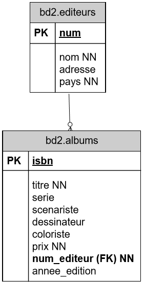
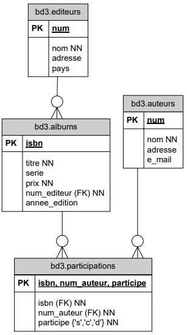

Partie Conception 1ère année :
Introduction :
Nous allons maintenant aborder la seconde partie du cours. L'objectif de celle-ci est de concevoir des bases de données.
Au départ d'un énoncé, nous allons rechercher les entités-clé et les modéliser sous forme d'un schéma appelé Diagramme de Structure de Données (DSD).
La conception de base de données est une démarche qui permet de réfléchir aux données afin de mémoriser finement l'information. Ceci nous permet :
- de mettre en évidence chaque entité et ses attributs, de manière à éviter la redondance,
- de définir une information unique qui permet d'identifier chaque entité,
- de préciser ce que contient chaque attribut, et d'éviter d'y placer des "choses" différentes,
- d'établir et de formaliser les relations entre les entités,
- de questionner plus précisément la base de données.
Nous allons brièvement revoir la démarche que nous avions suivie pendant la première partie du cours pour évoluer d'une base de données contenant une seule table "albums" vers une base de données en contenant quatre : éditeurs, albums, auteurs et participations.
Ceci nous permettra d'introduire les contraintes d'intégrité et de passer en revue les concepts de clé primaire et de clé étrangère.
Nous verrons ensuite, dans le détail, les différents modèles de relations qui peuvent exister entre les tables et nous illusterons le problème de la prise en compte du temps dans les relations.
Nous donnerons, dans la foulée, les consignes pour organiser lisiblement le DSD.
Enfin, nous aborderons les tables spécialisées et les étapes de développement d'une application.
Nous terminerons cette partie du cours en évoquant la problématique de sauvegarde des données. La conception d'une DB exigeant que l'on chasse la redondance au maximum, nous pourrions entrevoir le concept de la normalisation dont on en reparlera dans la troisième partie du cours.
Rappels
-
bd1.albums :
Dans la partie 1 (SQL), nous étions partis d'un exemple pour gérer les données des albums de bandes dessinées.
Nous avions créé une table albums correspondant à l'entité albums; chaque album dispose d'une information unique d'identification : le numéro isbn et les attributs suivants : titre, série, sénariste, coloriste, éditeur, pays d'édition, année d'édition et prix.
CREATE TABLE bd1.albums ( isbn CHAR (13) PRIMARY KEY, titre CHARACTER VARYING (50) NOT NULL, serie CHARACTER VARYING (20), scenariste CHARACTER VARYING (20), dessinateur CHARACTER VARYING (20), coloriste CHARACTER VARYING (20), editeur CHARACTER VARYING (20) NOT NULL, pays CHARACTER (1), annee_edition INTEGER, prix DOUBLE PRECISION NOT NULL, );Dans notre notation DSD, cela donne :
Les clés primaires (PRIMARY KEY) sont soulignées. On indique la mention 'PK'.
Les champs obligatoires (NOT NULL) sont indiqués 'NN'.
bd1.albums PK isbn titre NN
serie
scenariste
dessinateur
coloriste
editeur NN
pays
annee_edition
prix NN
Quelles étaient les contraintes de ce modèle ?
- Le pays d'édition dépend de l'éditeur et non de l'album.
-
Le nom et le pays de l'éditeur sont répétés pour chaque album. Cette répétition peut entraîner les problèmes suivants :
- Risque d'erreur : le nom de l'éditeur n'est pas toujours orthographié de manière correcte, il peut être écrit de manière différente (majuscule/minuscule).
- Il faut modifier le nom dans tous les albums, si la société change de nom,
- Risque d'incohérence : le pays de l'éditeur peut être différent d'un album à l'autre...
- Les mêmes problèmes peuvent se produire pour le nom du scénariste, du dessinateur et du coloriste,
- Un album ne peut avoir qu'un seul scénariste, qu'un seul dessinateur, qu'un seul coloriste.
-
bd2.albums :
Afin de solutionner les deux premiers problèmes (relatifs à l'éditeur), nous avons introduit une seconde entité : éditeurs. Une relation permet ensuite de joindre un éditeur à chaque album.
L'éditeur est identifié par un numéro unique. Il a des attributs nom et pays comme dans la solution bd1.albums auxquels nous avons ajouté un attribut adresse.
Dans la base de données, nous avions ajouté une table editeurs à laquelle faisait référence la table albums.
La nouvelle DB se présentait comme suit :
On indique la mention 'FK' à droite des clés étrangères (FOREIGN KEY).
Cela permet également de mémoriser des informations sur des éditeurs qui n'ont pas (encore) édités d'album.
Le lien entre les deux tables est assuré par une clé étrangère dans albums faisant référence à editeurs.
-
bd3.albums :
Ensuite, nous avons affiné le modèle pour résoudre les deux problèmes restants :
- nom des scénariste, dessinateur et coloriste répété à chaque album,
- limitation à un seul scénariste, dessinateur ou coloriste par album.
Était-il intéressant de créer trois scénaristes, dessinateurs et coloristes ? Non, cela aurait également introduit une duplication des données. Une même personne pouvant occuper chacun des rôles pour un même album ou pour des albums différents.
Nous avons donc introduit une entité auteurs et créé une table auteurs dans laquelle chaque auteur sera référencé.
Comme un auteur peut participer à plusieurs albums et qu'un album peut avoir plusieurs auteurs, nous avons introduit une table intermédiaire notée ici participations.
La table participations indique quel auteur intervient dans quel album. Il y a 3 types d'intervention possible matérialisée dans le champ participe : 's' pour scénariste, 'c pour coloriste et 'd' pour dessinateur.
Un tuple de participation est identifié par le numéro de l'auteur, l'ISBN de l'album et le rôle joué par l'auteur dans cet album.
Les 3 champs de participations ne peuvent donc jamais être NULL.
Ce modèle permet donc, comme le second :
- de mémoriser des informaions propres aux éditeurs, sans devoir les répéter à chaque album édité.
- de mémoriser des informations sur des éditeurs qui n'ont pas (encore) édité d'album.
Mais, en plus,
- de mémoriser des informations propres aux auteurs, sans devoir les répéter à chaque album édité.
- de mémoriser des informations sur des auteurs qui n'ont pas encore participé à un album.
- d'avoir plusieurs scénaristes, dessinateurs ou coloristes pour un même album.
Exemple de contenu des tables :

Les contraintes d'intégrité :
Nous avons défini des clés primaires et des clés étrangères dans nos bases de données. Elles assurent la cohérence de la base de données. Nous allons voir par quels mécanismes.
-
La clé primaire :
Une clé primaire doit identifier chaque tuple d'une table de façon non ambiguë. C'est un identifiant unique et non nul. Cette contrainte d'intégrité permet de s'assurer de l'unicité d'un enregistrement pour une table.
Lorsqu'une entité dispose naturellement d'un identifiant unique, cet identifiant unique peut êtrechoisi comme clé primaire. Le numéro isbn peut être la clé primaire de la table albums.
Lorsqu'une entité ne dispose d'aucun identifiant unique ou par choix, on choisit un numéro auto incrémenté. Un numéro séquentiel unique est la clé primaire de la table editeurs.
Dans la table participation, la clé primaire est une concaténation de troischamps : isbn, num_auteur et participe qui permettent d'identifier de manière unique la participation d'un auteur à un album via son rôle.
-
La clé étrangère :
L'intégrité référentielle garantit la cohérence des références entre tables.
Pour chaque information d'une table A qui fait référence à une information d'une table B, l'information référencée existe dans la table B.
Les contraintes d'intégrité référentielle garantissent donc la cohérence de la base de données.
Elles précisent les conditions dans lesquelles peuvent être ajoutés ou supprimés des enregistrements dans une table lorsqu'il existe des relations entre cette table et d'autres tables par l'intermédiaire de clés étrangères.
Cela signifie que :
-
Un 'enfant' ne peut référer un 'parent' que s'il existe.
- Le SGBD interdira d'ajouter un album si l'éditeur n'est pas enregistré dans la table editeurs.
- La contrainte interdira d'ajouter une participation si l'auteur et l'album ne sont pas préalablement inscrits dans la base de données.
-
Un 'parent' ne peut pas être supprimé s'il laisse des 'orphelins'.
- La contrainte interdira l'effacement d'un éditeur, tant que dans la base de données il existera au moins un album se référant à cet éditeur.
- Elle interdira de supprimer un auteur ou un album tant qu'il existera des participations pour cet auteur ou cet album.
Notons également que si la clé primaire est composée de plusieurs champs, il en sera forcément même pour les clés étrangères.
CREATE TABLE table1 ( cle_partie1 CHAR (4) NOT NULL, cle_partie2 CHAR (3) NOT NULL, ..., PRIMARY KEY (cle_partie1, cle_partie2), ); CREATE TABLE table2 ( cle_table2 INTEGER PRIMARY KEY, cle_etrangere_partie1 CHAR (4) NOT NULL, cle_etrangere_partie2 CHAR (3) NOT NULL, ..., FOREIGN KEY (cle_etrangere_partie1, cle_etrangere_partie2) REFERENCES table1 (cle_partie1, cle_partie2), ); -
La représentation d'un schéma :
-
Conventions :
Pour représenter un schéma, nous utilisons les conventions suivantes :
- Utiliser des noms de table entièrement en minuscules.
- Utiliser des noms de table au pluriel.
- Utiliser des noms de champs entièrement en minuscules.
- Utiliser "_" (underscore) pour séparer les mots.
- Ne mettre aucun caractère accentué dans les noms de table et de champ.
- Souligner la clé primaire et indiquer PK à gauche.
- Indiquer le mot-clé FK entre () à côté d'une clé étrangère.
- Indiquer NN pour les champs NOT NULL.
- Respecter le vocabulaire métier (le vocabulaire de l'énoncé).
- Vérifier la cohérence des clés étrangères (FK) et des relations.
- Mentionner le mot-clé unique lorsque cela est nécessaire.
- Mentionner les énumérés entre {}.
Graphiquement, une table est représentée de la sorte :

-
Lorsqu'un seul champ compose la clé primaire, il est indiqué uniquement dans l'espace réservé à cet effet.
Cela correspond au CREATE TABLE :
CREATE TABLE bd1.albums ( isbn CHAR (13) PRIMARY KEY, titre CHARACTER VARYING (50) NOT NULL, serie CHARACTER VARYING (20), ... ); -
Lorsque plusieurs champs composent la clé primaire, leur concaténation est indiquée dans l'espace réservé à cet effet et chaque champ est repris avec ses propriétés dans la liste des champs.

Cela correspond au CREATE TABLE :
CREATE TABLE table1 ( cle_partie1 CHAR (4) NOT NULL, cle_partie2 CHAR (3) NOT NULL, ..., PRIMARY KEY (cle_partie1, cle_partie2), ); -
Lorsqu'un seul champ compose la clé étrangère, le mot-clé FK est indiqué immédiatement derrière ce champ.
Cela correspond au CREATE TABLE :
CREATE TABLE bd3.albums ( isbn CHAR (14) PRIMARY KEY, titre CHARACTER VARYING (50) NOT NULL, serie CHARACTER VARYING (20), num_editeur INTEGER NOT NULL REFERENCES bd3.editeurs (num), ... ); -
Lorsque plusieurs champs composent la clé étrangère, chaque champ est repris avec ses propriétés dans la liste des champs et leur concaténation est ensuite indiquée avec le mot-clé FK.

Cela correspond au CREATE TABLE :
CREATE TABLE table1 ( cle_partie1 CHAR (4) NOT NULL, cle_partie2 CHAR (3) NOT NULL, ..., PRIMARY KEY (cle_partie1, cle_partie2), ); CREATE TABLE table2 ( cle_table2 INTEGER PRIMARY KEY, etr_partie1 CHAR (4) NOT NULL, etr_partie2 CHAR (3) NOT NULL, ..., FOREIGN KEY (etr_partie1, etr_partie2) REFERENCES table1 (cle_partie1, cle_partie2), ); -
De la même manière, lorsqu'un champ est unique, le mot-clé unique est indiqué immédiatement après ce champ. Lorsque la concaténation de plusieurs champs est unique, chaque champ est repris avec ses propriétés dans la liste des champs et leur concaténation est ensuite indiquée avec le mot-clé unique. Dans l'exemple ci-dessous, on remarque que le mot-clé unique est combiné avec le mot-clé FK.
Cela correspond au CREATE TABLE :
CREATE TABLE table1 ( cle_partie1 CHAR (4) NOT NULL, cle_partie2 CHAR (3) NOT NULL, ..., PRIMARY KEY (cle_partie1, cle_partie2), ); CREATE TABLE table2 ( cle_table2 INTEGER NOT NULL, etr_partie1 CHAR (4) NOT NULL, etr_partie2 CHAR (3) NULL, ..., FOREIGN KEY (etr_partie1, etr_partie2) REFERENCES table1 (cle_partie1, cle_partie2), UNIQUE (etr_partie1, etr_partie2), );
-
L'organisation graphique du DSD :
Certaines règles simples permettent de structurer le dessin pour qu'il devienne un support fiable à la conception.
- On placera en haut (à la périphérie) du dessin les entités les plus indépendantes et en bas (au centre) du dessin les entités les plus dépendantes. Généralement, les entités les plus dépendantes sont les plus volumineurses et les plus mouvementées. Souvent on descend vers les tables volumineuses.
- On évitera de croiser les relations. Il faut éviter les schémas spaghetti ou jeu de piste.
- Pour les schémas très importants, on peut utiliser des couleurs différentes pour mettre en valeur des tables de natures différentes ou utilisées dans différentes applications.
- On peut également créer plusieurs schémas en reprenant les tables communes.
Les relations :
-
Cas classique : relation 1 à 0 : N :
Un client peut passer plusieurs commandes d'articles. Un client est identifié par un numéro unique de client. Ce numéro peut être fourni par le système(un champ auto incrémenté par le SGBD) par un programme ou encore par l'utilisateur. On ajoutera plusieurs champs : le nom, l'adresse, le numéro de téléphone, ...
Une commande est identifiée par un numéro de commande (clé primaire qui peut être également un numéro séquentiel ou un champ plus complexe...). On ajoutera d'autres champs pour indiquer la date de la commande, l'état (pour le suivi), et un numéro de facture (dans l'hypothèse simpliste où à une commande correspond une seule facture).
Il faut en outre faire le lient avec le client. Plutôt que de répéter les informations du client nécessaires à la commandes, on établira un lien avec la table clients en mémorisant ici le numéro du client concerné. Ce champ était une clé primaire dans la table client, c'est une clef étrangère dans la table commande (FK).

Le symbole -o∊ montre une relation 1 : 0-N. Cette relation se lit dans les deux sens :
- un client a plusieurs commandes. Il peut ne pas en avoir, effectivement le symbole o indique que la relation est facultative.
- une commande est associée obligatoirement à un client.
-
Cas de la relation 1 à 1 : N :
On pourrait dire qu'un client n'est enregistré qu'au moment où il passe une première commande d'articles. Il pourra passer plusieurscommandes d'articles.
Le symbole -∊ montre une relation 1 : 1-N. Cette relation se lit dans les deux sens :
- Un client a au minimum une commande. Il peut avoir plusieurs commandes.
- Une commande est associée obligatoirement à un client.
-
Cas de la relation 1 à 0 : 1 :
Une commande peut référencer éventuellement une facture. Pour le moment, la facture est considérée comme un attribut de la commande. Envisagons la nécessité d'en créer une entité à part entière. Nous avons donc deux tables : commandes et factures.
Une commande référence éventuellement une facture. Une facture référence toujours une commande mais on ne retirnt pas cette information.
La relation est donc facultative. Dans la table commandes, la clé étrangère sera donc annotée NULL et graphiquement on ajoutera un petit rond à l'extrémité de l'association.
Le symbole -o montre une relation 1 : 0-1. Cette relation se lit dans les deux sens :
- une commande référence éventuellement une facture.
- une facture référence toujours une commande.

Cette relation peut également être représentée par une clé étrangère du côté de la facture :

Afin de s'assurer que deux ou plusieurs commandes ne référencent pas le même numéro de facture, on peut noter une contrainte d'unicité sur le champ facture (noté ici unique.

Et réciproquement,

-
Cas de la relation 1 à 1 :
Si on considère qu'à chaque commande correspondra nécessairement une facture, il faut ajuster le diagramme afin de relier les tables commandes et factures avec une relation 1 à 1.
Le symbole - montre une relation 1:1. Cette relatin se lit dans les deux sens :
- une commande référence toujours une facture.
- une facture référence toujours une commande.

Pour que le SGBD puisse facilement garantir la relation 1 à 1, il est conseillé d'utiliser la même clé primaire dans les deux tables, quand c'est possible.
On utilise dans ce cas la clé primaire de la table commandes également comme clé primaire pour la table factures. Dans la table commandes, on n'indique aucun clé étrangère. Une facture ser identifiée par un numéro de commande.

→ Remarquons qu'il serait plus judicieux d'utiliser le numéro de facture qui est un élément idispensable d'une facture en bonne et due forme.
-
Autres relations entre deux tables :
On peut combiner les terminaisons de relations supportées par le SGBD.
Le symbole o-o montre une relation 0-1 : 0-1.Cette relation se lit dans les deux sens :
- une entité a référence éventuellement une entité b.
- une entité b référence éventuellement une entité a.
Le symbole o-o∊ montre une relation 0-1 : 0-N.
Le symbole o-∊ montre une relation 0-1 : 1-N.
-
Cas de la relation M à N :
Une commande peut porter sur plusieurs articles. Un article peut faire partie de plusieurs commandes.
C'est une relation M à N.

Le SGBD ne peut pas implémenter cette relation directement mais le fait par le biais de deux relations 1 : N.
Cela exige donc la création d'une nouvelle entité intermédiaire.
Concrètement, on sera obligé de créer une table pour mémoriser le fait que dans une même commande, on rencontre plusieurs articles mais qu'un même article peut, bien entendu, être commandé plusieurs fois.

Une clé étrangère à NULL :
La clé étrangère peut être à NULL pendant un certain temps et définie par la suite.
Prenons l'exemple du carnet de rendez-vous d'un cabinet médical. Ce cabinet est composé d'une dizaine de médecins qui ont une grille de rendez-vous qui s'échelonnent toutes les demi-heures. Les médecins prestent seulement certains jours ou demi-jours dans ce cabinet et parfois de façon irrégulière.
La secrétaire encode au départ les disponibilités de chaque médecin et puis fixe les rendez-vous avec les patients sur base de celles-ci.
Évolution de la construction du DSD :
Étpae 1 : le planning :
On prévoit les disponibilités de chaque médecin :

Remarque : vu la convention que nous adoptons (nom d'une table toujours au pluriel), nous préférerons rendez-vous comme nom pour la table.
Étape 2 : l'introduction des patients :
Aussi longtemps que la plage du planning n'est pas attribuée à un patient, la clé étrangère num_sis de la table rendez-vous reste à NULL.

Lorsqu'un patient prend le rendez-vous disponsible, la clé étrangère est indiquée. Il se pourrait que certains rendez-vous ne soient jamais attribués.
-
Influence du temps sur les clés étrangères :
Exemple : un grossiste effectue des livraisons à ses clients tout au long du mois en fonction de leurs commandes. À la fin du mois, toutes ces livraisons sont facurées en une seule fois. La facture d'un client regroupe donc toutes les livraisons effectuées à ce client durant le mois.
Cet exemple démontre bien l'importance de nommer les relations dans certains cas. Il est une nouvelle illustration d'une clé étrangère de valeur NULL.
Entre les entités clients, il exite deux relations différentes. Celles-ci pourraient être de cardinalité différente (voir plus loin).
On peut noter que certains champs pourraient également servir d'identifiant unique. On peut en faire des index uniques (notés ici idx_unique).
Un index est une propriété d'une colonne de la base de données permettant de l'indexer dans le but d'améliorer l'accès aux données par le SGBD. Tout comme l'index dans un livrequi permet de retrouver plus facilement l'information, l'index unique impose l'unicité de l'indexation; il permet d'identifier chaque tupled'une table de façon non ambiguë.
Les relations multipkes entre tables :
-
Relations M à N :
Une table donnée peut avoir deux relations M à N avec deux tables différentes (et beaucoup si nécessaire).
Voici un DD qui illustre ce propos :

La même table cours participe à deux relations M à N différentes.
- resultats donne le résultat pour un cours et un étudiant. (remarque : il serait utile de se demander comment conserver les résultats s'il y a plusieurs sesions possibles).
- horaires décrit les heures auxquelles se donne un cours dans un local.
Choix des clés primaires :
- resultats est telle que pour un cours et un étudiant on n'a qu'un seul résultat. La clé primaire est donc formée par la concaténation des deux clés étrangères.
- En ce qui concerne horaires, c'est différent; un même cours peut être donné dans un même local à des moments différents. La clé primaire est donc indépendante des clés étrangères.
-
Relations 1 à N :
Gestion des classes d'une école de l'enseignement secondaire :
Dans l'enseignement secondaire, les élèves sont regroupés par niveaux d'étude (ou années).
Une classe regroupe plusieurs élèves, en général entre 12 et 25.
Le programme de cours prévoit 32 heures de cours par élève. Outre les cours obligatoires, l'élève doit choisir et s'inscrire à des cours à option. Un cours est organisé pour minimum 8 élèves.
Un professeur donne 19 heures de cours, parfois il peut accepter de donner jusqu'à 4 heures supplémentaires, parfois il doit accepter un temps partiel.
Un cours n'est attribué qu'à un seul professeur.
Parmi les professeurs, on choisit un titulaire de classe. Il arrive qu'un professeur soit titulaire de 2 classes.

Dans ce diagramme, plusieurs entités ont deux relations différentes entre elles : une classe a un professeur titulaire et un seul mais une classe a plusieurs professeurs qui lui donnent cours. Ces mêmes professeurs donnent cours à d'autre classes.
-
Relation 1 à N induite :
Si entre les entités clients et commandes, il y a une relation 1 à N et si entre les entités commandes et lignes_commande, il y a aussi une relation 1 à N, il existe alors une relation 1 à N déduite entre clients et lignes_commande. Il est inutile de la dessiner.
Les relations réflexives :
-
Relations réflexives hiérarchiques :
Le cas typique de ce genre de relation est la table où l'on désire mémoriser des services d'une institution organisée hiérarchiquement.
La direction comprend, entre autres, un service juridique. Celui-ci se décompose en service juridique du personnel et service juridique commercial ainsi que le contentieux. Le service juridique contentieux gère les conflits et les procès pour la Belgique et l'étranger; deux sous services sont donc créés, etc.

Cette hiérarchie sera mémorisée comme suit :
Code service Nom service Responsable du service Code service supérieur 0 Direction générale Dupuis - 1 Juridique Janssens 0 2 Personnel Durand 1 3 Commercial Carlot 1 4 Contentieux Van Camp 1 5 Belge André 4 6 Etranger Michel 4 7 UE Van den Berg 6 8 Hors UE Lee 6 Représentation :

-
Relations en réseau (réflexives non hiérarchiques) :
C'est le cas typique de structure d'assemblage. Une pièce peut être composée de plusieurs pièces et une même pièce peut être un composant de plusieurs pièces.
Représentation :

Par exemple, une foreuse est composée d'un accumulateur, d'un moteur et d'un interrupteur.
Pièces :
no_piece nom description B72 FACC72 Foreuse sur Accus 7.2 V modèle Brico P72 PACC72 Foreuse sur Accus 7.2 V modèle professionnel B96 FACC96 Foreuse sur Accus 9.6 V modèle Brico P96 PACC96 Foreuse sur Accus 9.6 V modèle professionnel A72 ACC72 Accus 7.2V A96 ACC96 Accus 9.6 V M72 MOT72 Moteur 7.2 V M96 MOT96 Moteur 9.6 V IP INTPROF Interrupteur Brico IB INTPROF Interrupteur Brico Composants :
no_piece_composee no_piece_composante B72 A72 B72 IB B72 M72 P72 A72 P72 IP P72 M72 Dans cet exemple, on constate qu'entre le modèle bricolage et professionnel, seul l'interrupteur change.
-
Exercice proposé : le parrainage :
On désire mettre en place un système de parrainage des étudiants de 1ère et même de 2ème année par d'autres étudiants plus expérimentés (d'une année supérieure). Un étudiant pourrait demander des explications sur des matières plus difficiles à son parrain.
On souhaite mémoriser qui parraine qui.
Première hypothèse : un étudiant (parrain) pourrait parrainer plusieurs autres étudiants (ses filleuls) mais un filleul n'aurait qu'un seul parain.
Deuxième hypothèse : un filleul pourrait avoir plusieurs parrains plus ou moins spécialisés suivant les matières en question.
Pour chaque hypothèse, construisez une DB (DSD) et écrivez un SELECT SQL.
- Qui affiche pour chaque parrain (matricule et nom) le nombrede ses filleuls.
- Qui affiche pour chaque parrain (matricule et nom) le matricule et le nom de ses filleuls.
DSD de la première hypothèse :
DSD de la deuxième hypothèse :
Les tables spécialisées :
Partons d'une table décrivant les articles vendus par une société :

Le champ type_produit de la table produits contient le char 'S' pour savon, 'D' pour détergent et 'H' pour shampoing.
Les autres champs de cette table sont remplis selon le type de produits :
- S'il s'agit d'un savon, les champs couleur, texture et parfum seront remplis,
- S'il s'agit d'un shampoing, le champ agent_moussant sera rempli,
- Enfin, s'il s'agit d'un détergent, le champ agent_detergent sera rempli.
Dans le cas d'un savon par exemple, les champs agent_moussant et agent_detergent resteront vides (NULL). En fait, suivant le type de produit, l'enregistrement devrait avoir une structure différente.
Une solution plus claire est de définir 3 tables spécialisées (une par type de produits) en plus de la table générale des produits.

Dans cet exemple, un produit est soit un savon, soit un shampoing, soit un détergent. Nous allons donc créer :
- un tuple dans la table produits pour tous les produits (savons, shampoings et détergents) ET
-
un tuple dans la table correspondant au type_produit :
- Si 'S', dans la table savons;
- Si 'D', dans la table detergents;
- Si 'H' dans la table shampoings.
La clé primaire des tables spécialisées est la même que la clé primaire de la table générale.
Cependant, il peut arriver que des clés primaires différentes existent. C'est ce que nous allons voir dans l'exemple suivant.
Au service central d'une université, on décide d'enregistrer toues les membres de l'université dans une seule table personnes, spécialisée en deux tables etudiants et professeurs. Les professeurs sont identifiés par un numéro de matricule tandis que les étudiants sont identifiés par leur numéro d'inscription.
Voici deux manières de représenter cette situation :
Solution 1 :

Solution 2 :
Une personne peut être présente dans les deux tables spécialisées. Dans cette université, certains étudiants de doctorat ont déjà des charges académiques et sont donc considérés à la fois comme des étudiants et comme des professeurs.
La sauvegarde des données :
La sauvegarde est l'opération qui consiste à mettre en sécurité les données contennues dans un sytème informatique. Ce terme est proche de deux notions :
- l'enregistrement des données, qui est l'opération d'écriture des données sur un item d'enregistrement durable, tel qu'un disque dur, une clé USB, des bandes magnétiques, etc. (back up)
- l'archivage, qui consiste à enregistrer des données sur un support à des fins légales ou historiques.
-
Le back up :
Les copies de sûreté sont utiles principalement à deux choses :
- La première et la plus évidente est de permettre de restaurer un système informatique dans un état de fonctionnement à la suite d'un incident (perte d'un support de stockage tel que disque dur, bande magnétique, etc., ou de tout ou partie des données qu'il contient).
- La seconde, incluse dans la première mais certainement la plus courante, est de faciliter la restauration d'une partie d'un système informatique (un fichier, un groupe de fichiers, un système d'exploitation, une donnée dans un fichier, etc.) à la suite d'une suppression accidentelle ou à une modification non désirée.
La technique la plus fréquente est la copie des données sur un support indépendant du système initial (serveur distant, bandes magnétiques...).
L'opération inverse qui consiste à réutiliser des données sauvegardées s'appelle une restauration.
-
L'archivage :
L'archivage vise à désengorger des tables de mouvements, souvent volumineuses et rapidement périmées.
Pour des raisons légales ou pour répondre à des demandes de statistiques, les données sont conservées plus longtemps. On stocke alors les données dans une DB séparée ou dans un data warehouse (Big data; business intelligence (informatique décisionnelle)).